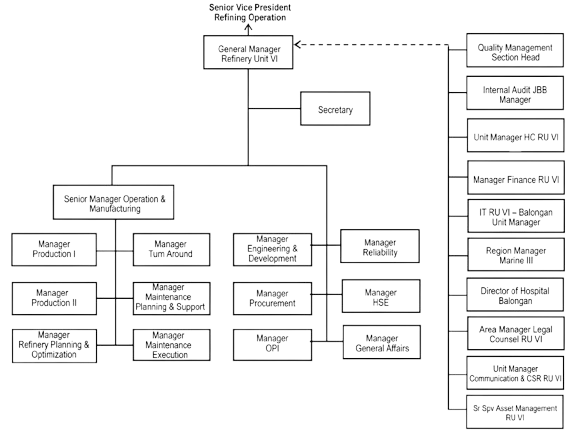

Profil Perusahaan
PT Kilang Pertamina Internasional (KPI) Refinery Unit (RU) VI Balongan adalah kilang minyak strategis yang berlokasi di Balongan, Indramayu, Jawa Barat. Berdiri di atas lahan sekitar 250 hektar, kilang ini mulai beroperasi pada Oktober 1994 dan diresmikan oleh Presiden Republik Indonesia pada 24 Mei 1995, dengan Indeks Kompleksitas Nelson tertinggi di antara kilang Pertamina sebesar 11,9. RU VI Balongan berperan penting menyuplai BBM dan LPG untuk Jabodetabek, Banten, dan sebagian besar Jawa Barat, mulai dari Pertamax, Pertamax Turbo, Solar/Biosolar, Diesel X berstandar Euro 5, LPG, hingga produk petrokimia.
Sejarah Singkat Kilang Balongan
Kilang Balongan dibangun dengan sistem biaya pembangunannya dibayar dari pendapatan kilang Balongan sendiri dan keuntungan kilang Pertamina lainnya. Karena itu, Balongan disebut kilang milik Pertamina.
Mengapa Kilang Ini Dibangun?
Mengolah minyak mentah Duri yang sulit diolah kilang lain.
Mengantisipasi kebutuhan BBM nasional maupun regional.
Menghasilkan produk dengan nilai tambah tinggi.
Perjalanan Kilang
-
1990
Minyak mentah Duri berkualitas rendah, residunya hingga 78% dan banyak mengandung logam serta nitrogen, sehingga harganya relatif murah. Produksinya terus naik berkat metode Secondary Recovery, tetapi kilang dalam negeri saat itu belum mampu mengolahnya dalam jumlah besar.
-
1991
Proyek EXOR I (Export Oriented Refinery I) dimulai di Balongan. Kilangnya kemudian diberi nama Pertamina Refinery Unit VI Balongan.
-
Oktober 1994
Kilang mulai beroperasi.
-
30 Januari 1995
Jadwal peresmian awal. Ditunda karena unit RCC mengalami kerusakan.
-
24 Mei 1995
Kilang diresmikan oleh Presiden Soeharto.
Bahan Baku
Kilang dirancang untuk mengolah minyak mentah Duri 80% dan Minas 20%. Saat ini bahan bakunya campuran Duri, Minas, Nile Blend, Jatibarang, LSWR, Banyu Urip, Wassana, dan Cinta.
Struktur Organisasi

Tugas Pokok Tiap Bagian
Pimpinan Unit
- General Manager Refinery Unit VI
Memimpin dan mengawasi seluruh kegiatan Refinery Unit VI. - Secretary
Membantu administrasi dan kegiatan kesekretariatan General Manager.
Di Bawah Senior Manager Operation & Manufacturing
- Senior Manager Operation & Manufacturing
Mengarahkan operasi, pemeliharaan, dan pengadaan di kilang. - Manager Production I
Mengelola operasi unit RCC, HSC, dan DHC. - Manager Production II
Mengelola operasi unit UTL, LAB, POC, dan OM. - Manager Refinery Planning & Optimization
Merencanakan pengelolaan bahan baku dan produk kilang. - Manager Turn Around
Mengoordinasikan turn-around dan overhaul peralatan. - Manager Maintenance Planning & Support
Merencanakan pemeliharaan dan mengelola data peralatan. - Manager Maintenance Execution
Melaksanakan pemeliharaan, turn around, dan overhaul peralatan.
Langsung di Bawah General Manager
- Manager Engineering & Development
Mengelola modifikasi kilang, unit baru, dan pengembangan teknologi. - Manager Procurement
Mengelola pengadaan barang dan jasa. - Manager OPI
Memperbaiki kinerja operasional perusahaan. - Manager Reliability
Menjaga kehandalan kilang lewat inspeksi dan strategi pemeliharaan. - Manager HSE
Menjaga keselamatan kerja, kesehatan, dan lingkungan. - Manager General Affairs
Mengelola urusan umum dan layanan pendukung kantor.
Fungsi Pendukung
- Quality Management Section Head
Mengelola sistem manajemen mutu di unit. - Internal Audit JBB Manager
Mengelola audit untuk pengawasan internal. - Unit Manager HC RU VI
Mengelola tenaga kerja, pelatihan, dan hubungan industrial. - Manager Finance RU VI
Mengelola keuangan, anggaran, dan kas. - IT RU VI - Balongan Unit Manager
Mengelola teknologi informasi dan datanya. - Region Manager Marine III
Mengelola operasi kapal dan layanan pelabuhan. - Director of Hospital Balongan
Melayani kesehatan pekerja dan keluarga di Pertamina Hospital Balongan. - Area Manager Legal Counsel RU VI
Memberi layanan hukum untuk kegiatan operasional. - Unit Manager Communication & CSR RU VI
Mengelola komunikasi perusahaan dan program tanggung jawab sosial (CSR). - Sr Spv Asset Management RU VI
Mengelola aset perusahaan di unit.